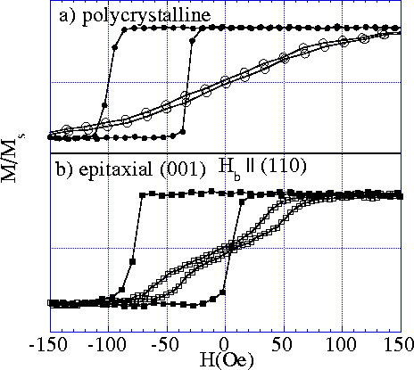
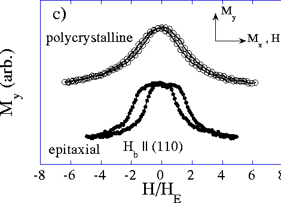

Figure 4: The same measurements as shown in figure 3 for a second set of simultaneously deposited polycrystalline and epitaxial bilayers except that here H b, the bias field during deposition, was applied parallel to an in-plane (110) axis. For the polycrystalline films in a) the easy-axis loop is shifted by H E = 66 Oe. In b) the epitaxial film has H E = 36 Oe.

c) shows the transverse hard axis magnetization loops. The
data are qualitatively similar to those in figure 3,
particularly the observation of discontinuities indicating a
cubic anisotropy with minima referenced to the bias field
axis. Thus the cubic anisotropy is induced by the bias field
and is not influenced by the orientation of H b
relative to the NiO crystal axis.